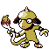

#184
Smeargle
Updated typingNormal
TechnicianPowers up its weaker moves.
Own TempoPrevents it from becoming confused.
Original vs Updated
Original uses modern main-game values. Updated uses Crimson Crystal’s changes. Choose typings and base stats separately when starting a new game. Abilities, moves and evolution changes apply to both choices.
Original
Normal
Updated
Normal
Base stats
| Stat | Original | Updated | Change |
|---|---|---|---|
| HP | 55 | 55 | — |
| Attack | 20 | 20 | — |
| Defense | 35 | 35 | — |
| Sp. Atk | 20 | 20 | — |
| Sp. Def | 45 | 45 | — |
| Speed | 75 | 75 | — |
| Total | 250 | 250 | — |
Evolution
Does not evolve.
Training & breeding
- Catch rate
- 45 / 255
- Base experience
- 88
- Wild held items
- None
- Gender ratio
- 50% male, 50% female
- Egg groups
- Field
- Hatch time
- 20 egg cycles (~5,120 steps)
- Growth rate
- Fast
Level-up moves
LevelMoveTypeCat.PowerAcc.
TM / HM moves 0
Cannot learn any TMs or HMs.